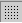

Kako nari�emo risbo s preprostimi liki,
tem likom spreminjamo lastnosti (barvo, velikost, polo�aj...)
in izdelek natisnemo.
vir dokumenta:
OpenOffice.org Documentation Project
Kazalo:
- Kratek pregled. Seznanitev z risarskimi orodji programa OpenOffice.org.
- Risati ho�em in to takoj! Naj se izka�e umetnik v vas!
- Spreminjanje risb. Spreminjanje lastnosti predmetov: barve, velikosti, polo�aja...
- Tiskanje risb. Spravite svoj izdelek na
papir.
- 1 Odpravljanje te�av pri tiskanju. Ali tiskanje ne gre tako, kot bi moralo? Poglejte sem.
- Zahvala avtorju tega dokumenta in sodelujo�im.
1. Kratek pregled. Seznanitev z orodji programa OpenOffice.org
Leta 1937 je veliki �panski slikar Pablo Picasso navdu�il svet s �udovitim, dramati�nim delom Guernica. K sre�i vam dandanes ni treba biti odli�en slikar, kakr�ne poznamo iz knjig o umetnosti, �e �elite ustvarjati risbe in druge kakovostne grafi�ne dokumente. Na voljo so vam sodobni risarski ra�unalni�ki programi! Med njimi je tudi OpenOffice.org Draw, s katerim je ustvarjalno delo la�je in bolj zabavno.
Preden se za�nete u�iti dela z Drawom, si oglejte njegovo "delovno mizo" in orodja na njej. Ko odprete nov, prazen dokument, se prika�e tak�no okno:

Tik pod naslovno vrstico okna (v njej sta ime dokumenta in ime programa) so tri vrstice z ukazi in orodji, ki si od zgoraj navzdol sledijo tako:
- menijska vrstica
- funkcijska vrstica
- predmetna vrstica
V menijski vrstici so glavni meniji programa Draw. V funkcijski vrstici so ikone, s katerimi dose�ete nekaj pogostih funkcij: Odpri, Shrani, Kopiraj, Izre�i, Prilepi in druge. Vsebina predmetne vrstice se spreminja; v njej so orodja, s katerimi vplivate na izgled trenutno izbranega predmeta. Na primer: pri likih izbirate med drugim barvo in debelino �rt (robov) in vrsto polnila.
Nasvet: Ikone in funkcije v orodnih vrsticah lahko dodajate ali skrivate tudi sami. Kako? Z desnim mi�kinim gumbom kliknite na vrstico. Poka�e se priro�ni meni, v katerem izberete 'Po meri...', nakar zagledate okno z vsemi ukazi, ki so na voljo za dodajanje. �e pa v meniju izberete mo�nost 'Vidni gumbi', lahko dolo�ene gumbe v vrstici skrijete. V istem meniju lahko skrijete in spet prikli�ete tudi cele orodne vrstice, tudi vrstico mo�nosti, ki je na za�etku skrita. V tej vrstici so gumbi, s katerimi sicer ni�esar ne nari�emo, pa� pa vplivamo na izgled in obna�anje programa Draw.
Ob levem robu okna je navpi�no postavljena glavna orodna vrstica. V njej so predvsem orodja za risanje predmetov, ki sestavljajo dokument, zato jo bomo �e podrobno opisali. Na dnu okna pa je vrstica stanja. Prikazuje kar nekaj uporabnih informacij: koordinate kazalca, pove�avo pogleda na zaslonu, vrsto in velikost izbranega predmeta, ime predloge in �e ve�.
Poleg tega vidite ob robovih dokumenta �e dve vrstici, polni �tevilk - to sta vodoravno in navpi�no ravnilo. Z desnim klikom nanju lahko izberete, v kak�nih merskih enotah merita razdalje. �e ravnil ne potrebujete, ju lahko skrijete z ukazom Pogled-Ravnila v menijski vrstici. Na isti na�in ju spet prika�ete.
2. Risati ho�em in to takoj! Naj se izka�e umetnik v vas.
Morda ste za�eli brati kar tukaj namesto na za�etku. �e imate vsaj malo potrpljenja, bo bolje, da preberete najprej prej�nji odsek in se seznanite z osnovnimi pojmi, saj jih boste od tod naprej ve�krat sre�ali. Druga�e pa kar za�nimo z risanjem!

Na sliki na desni vidite, kako izgleda glavna orodna vrstica. V njej so zlo�ena orodja, ki jih boste rabili pri risanju z Drawom. Posamezno orodje vklju�ite tako, da kliknete na njegovo ikono. Ta ikona nato ostane v "pritisnjenem" stanju, tako da vedno vidite, katero orodje je trenutno izbrano. Poskusite in izberite pravokotnik, ki je �etrta ikona od zgoraj...
Sedaj premaknite mi�kin kazalec v obmo�je dokumenta, torej na belo povr�ino. Kot vidite, se je spremenil v kri�ec, ob katerem je majhen pravokotnik. Tako pa svoj prvi pravokotnik tudi zares nari�ete:
- Kliknite in dr�ite mi�kin gumb kjerkoli v obmo�ju dokumenta. Tam bo eno ogli��e pravokotnika.
- Premaknite mi�ko drugam in nato spustite gumb. S tem ste dolo�ili �e nasprotno ogli��e.
Heureka! Krasen pravokotnik! (Pa naj vas zaenkrat ne moti osem kvadratkov, ki so ga nenadoma obkro�ili.) Zdaj natan�no poglejte glavno orodno vrstico: ikona s pravokotnikom ni ve� izbrana. Tako je zato, ker ste nanjo prej kliknili le enkrat. �e ho�ete narisati ve� pravokotnikov zapored, jo kliknite dvakrat in orodje bo ostalo vklju�eno, dokler sami ne izberete kak�nega drugega.
Nasvet: Na glavni orodni vrstici lahko opazite tudi majhne zelene pu��ice, ki so ob ve�ini ikon. Ozna�ujejo, da se za dolo�enim orodjem skriva �e lebde�a orodna vrstica s sorodnimi orodji. Prika�e se, �e na ikono kliknete in gumb kak�no sekundo zadr�ite. Lebde�e vrstice lahko z vle�enjem premikate po oknu programa Draw, kamorkoli �elite. Koristne so, kadar �elite zaporedoma narisati ve� likov podobne vrste, na primer zapolnjene in nezapolnjene pravokotnike in kvadrate. Vsaka lebde�a vrstica ima v zgornjem desnem kotu tudi gumb, s katero jo zaprete. �e pa je niste sploh nikamor odvlekli, se bo zaprla takoj, ko z nje izberete eno od orodij.
Narisati pravokotnik ali kvadrat (tudi tak�nega z zaobljenimi ogli��i) je torej preprosto. Na lebde�i vrstici izberete lik, kakr�nega �elite, nato pa z mi�ko povle�ete od enega ogli��a do nasprotnega. Zdaj pa malo bolj zapleteni liki, ki jih pozna OpenOffice.org Draw: krog, elipsa in kro�ni izsek. Nari�ete jih takole:
- Na glavni orodni vrstici izberite elipso (ki je tik pod pravokotnikom), mi�kin gumb pa �e malo zadr�ite, da se poka�e lebde�a vrstica.
- Izberite enega od likov.
- Kliknite in dr�ite mi�kin gumb v obmo�ju dokumenta.
- Premaknite mi�ko in spustite gumb.
Krog in elipsa sta tako narisana. Med risanjem pa imate �e nekaj mo�nosti. Poskusite, kaj se zgodi, �e med vle�enjem (korak 4) dr�ite tipko Alt. Opazili boste, da sedaj ri�ete lik od sredi��a do roba, ne pa od roba do roba kot prej. Dr�anje tipke Ctrl povzro�i trenuten preklop med elipso in krogom, dr�anje tipke Shift pa pripenjanje robov na mre�o (centimetrsko ali kak�no drugo, �e je bila prej izbrana). �e je potrebno in �e zmorete, lahko dr�ite tudi vse tri hkrati, pa seveda hkrati �e tipko na mi�ki.
Z zapletenej�imi liki je malo ve� dela:
- Kro�ni izsek in elipti�ni izsek: To je lik, ki je podoben ve�jemu
ali manj�emu kosu torte.
- V lebde�i vrstici z elipsami izberite kro�ni ali elipti�ni izsek. Nari�ite krog ali elipso, kot da bi bila polna.
- Zdaj se poka�e �rta od sredi��a do roba elipse - se pravi polmer. Po tej �rti bo elipsa prerezana. Polmer se premika, ko premikate mi�ko. Njegov polo�aj dolo�ite tako, da kliknete.
- Poka�e se �e en polmer, ki ga spet premikate z mi�ko. Ta �rta pomeni drugi rez. Njegov polo�aj dolo�ite tako, da �e enkrat kliknete. Lik je sedaj dokon�an.
- Kro�ni odsek in elipti�ni odsek: to je del kroga ali elipse, ki
ni izrezan iz sredi��a, ampak pre�no prerezan.
- V lebde�i vrstici z elipsami izberite kro�ni ali elipti�ni izsek. Nari�ite krog ali elipso, kot da bi bila polna.
- Zdaj se poka�e polmer, ki ga lahko premikate z mi�ko. Ko kliknete, dolo�ite prvo to�ko na obodu, skozi katero gre rez.
- Poka�e se �rta rezanja. En konec ste ji �e dolo�ili, drugega lahko premikate sedaj. Nato �e enkrat kliknite. Lik je dokon�an.
3. Spreminjanje risb. Spreminjanje lastnosti predmetov: barve, velikosti, polo�aja...
�e ste se pridno u�ili dela z Drawom, je na va�i risbi �e polno vseh mogo�ih likov. Da zmeda ne bo prevelika, zdaj raje ustvarite �e en nov, prazen dokument z ukazom iz menija Datoteka-Novo-Risba.
Na prazni strani nari�ite pravokotnik in si oglejte, kak�en je. Zapolnjen je s svetlomodro barvo, okrog njega pa so majhni zeleni kvadratki. Svetlomodra je privzeta barva polnila, zeleni kvadratki pa so ro�ice za spreminjanje velikosti. �e imamo ve� likov, se poka�ejo okrog tistega, ki je trenutno izbran. Zdaj pa liku poskusimo spremeniti barvo! Saj menda no�ete samih svetlomodrih?
�e pojasnilo. Zakaj enkrat govorimo o predmetih, drugi� o likih? Predmet je splo�en izraz za vse, kar lahko postavite na dokument. Izmed predmetov tukaj podrobneje opisujemo le like, pravzaprav samo pravokotnike in elipse, gotovo pa boste prav kmalu odkrili in uporabili �e �rte, besedilo, ve�kotnike in �e kaj.
Za izbiro barve je ve� na�inov, najbolj priro�ni pa so tile:
- V meniju Oblika izberite mo�nost Polnilo. V oknu, ki se pojavi, izberite barvo s seznama barv.
- Z desno tipko mi�ke kliknite na pravokotnik. S tem prikli�ete priro�ni meni. Z njega izberite mo�nost Polnilo. Pojavi se enako okno kot v prvem primeru.
- V predmetni vrstici je na desni strani seznam za izbiro barve polnila. Kliknite na seznam, da ga raz�irite. Barvo izberete tako, da kliknete nanjo.
Pri spreminjanju katerekoli lastnosti velja, da ukazi u�inkujejo le na trenutno izbrani predmet. Katerikoli predmet izberete tako, da enkrat kliknete nanj.
Nasvet: pri oblikovanju risb, namenjenih za svetovni splet, je obi�ajna uporaba spletne barvne palete (web safe color palette). Na njej so zbrane tiste barve, ki jih zmorejo razli�ni brskalniki prikazati pribli�no enako. Vsaka od teh barv je ozna�ena z imenom in �estnajsti�ko vrednostjo. �e �elite uporabljati spletno paleto, storite takole:
- Na dokumentu nari�ite lik, na primer pravokotnik.
- S klikom ta lik izberite.
- Z desnim klikom prikli�ite priro�ni meni.
- Izberite 'Polnilo...'.
- V oknu, ki se prika�e, preklopite na zavihek 'Barve'.
- Kliknite ikono 'Nalo�i seznam barv'
 .
. - Izberite datoteko html.soc in pritisnite 'OK'. (pot do datoteke je OpenOffice/user/config/)
Kot vidite, je lik �e vedno izbran. Tako ostane, dokler ne kliknete na kak�nega drugega. �e �elite izbrati ve� likov hkrati, med izbiranjem dr�ite tipko Shift. �e pa kliknete na prazno povr�ino dokumenta, ne bo izbran noben lik ve�.
Poleg barve polnila lahko spreminjate tudi druge lastnosti predmetov. Na primer vrsto obrobe, ki je bila pri vseh likih, ki ste jih narisali do sedaj, le tanka �rna �rta. Tudi to je mogo�e narediti na ve� na�inov, zelo podobno kot prej, ko ste spreminjali polnilo. Pazite, da je predmet pred tem �e izbran.
- Iz menija izberite Oblika-�rta. V oknu, ki se pojavi, lahko izberete lastnosti �rte.
- Z desnim klikom na lik prikli�ite priro�ni meni in na njem izberite '�rta...' Pojavi se enako okno kot v prej�njem primeru.
- V predmetni vrstici so na levi strani seznami za izbiro barve in �e nekaj drugih lastnosti �rte. Kliknite ne enega od seznamov, na primer tistega za barvo, da ga raz�irite. Barvo izberete tako, da kliknete nanjo.
Pokazali smo vam, kako spremeniti izgled predmeta. Predmetom pa lahko spremenite tudi velikost in jih premikate. Za to vajo nari�ite na dokument �e en pravokotnik. Ko je narisan, zagledate okrog njega �e znane zelene kvadratke, ki slu�ijo kot ro�ice za spreminjanje velikosti. Preizkusite njihovo uporabnost:
- Kazalec mi�ke zapeljite na enega od zelenih kvadratkov - ro�ic. Kazalec se pri tem spremeni v dvosmerno pu��ico, ki ka�e, v katero smer lahko s to ro�ico spremenite velikost. Ro�ice ob robovih so za spreminjanje samo vi�ine ali samo �irine, tiste na vogalih pa za vi�ino in �irino hkrati.
- Pritisnite in zadr�ite levo tipko mi�ke. Premaknite mi�ko in opazujte, kako se spreminja velikost lika. Ko ste rob ali ogli��e privlekli, kamor ste �eleli, spustite tipko.
Pogosto je potrebno spremeniti velikost sorazmerno, se pravi tako, da ohranite razmerje med �irino in vi�ino in lika ne popa�ite. To naredite tako, da med vle�enjem dr�ite tipko Shift.
Na podoben na�in je mogo�e predmete tudi premikati po risalni povr�ini. Najpreprosteje gre to takole:
- Lik, ki ga �elite premakniti, izberite s klikom nanj.
- Ko zapeljete z mi�ko na ta lik, se kazalec spremeni v �tirismerno pu��ico.
- Pritisnite in zadr�ite levo mi�kino tipko. S tem ste lik prijeli.
- S premikanjem mi�ke premaknite predmet na drugo mesto in tipko spustite.
Nasvet: pri natan�nem risanju je ve�krat potrebno predmete premakniti na to�no dolo�eno mesto ali jim dati to�no dolo�eno velikost. V programu Draw naredite to tako, da predmet ozna�ite, nato nanj kliknete z desno tipko in iz priro�nega menija izberete 'Polo�aj in velikost...' Poka�e se istoimensko okno, v katerem lahko vnesete polo�aj in velikost v centimetrih (cm), milimetrih (mm), palcih (in) ali druga�nih merskih enotah.
Poleg tega lahko vklju�ite prikaz pravokotne mre�e iz pik na risalni povr�ini. V eni od orodnih vrstic kliknite z desno tipko in s priro�nega menija izberite 'Vrstica Mo�nosti'. V spodnjem delu okna se poka�e orodna vrstica, ki je doslej ni bilo, na njej pa je med drugim tudi gumb za vklop mre�e: . Razmik mre�e pa si lahko prilagodite, �e v meniju Orodja izberete Mo�nosti, nato pa v oknu Mo�nosti, na levi strani, �e Risba in Mre�a.
�e ena uporabna mo�nost je spreminjanje zaporedja predmetov. Predmeti so sprva postavljeni v tak�nem zaporedju, kot ste jih narisali. Pri tem lahko delno ali popolnoma prekrijejo eden drugega. Tedaj nekaterih sploh ne vidite, pa tudi ozna�iti jih ne morete kar s klikom. �e bi radi predmet na primer prestavili v ozadje, za vse druge, ga najprej ozna�ite. Na�inov za razporejanje je ve�, tu sta le dva preprosta:
- Kliknite in nekaj �asa dr�ite gumb 'Razporedi'
 na glavni
orodni vrstici, da se poka�e ustrezna lebde�a vrstica. Nato kliknite ikono
'Po�lji v ozadje', ki je desno zgoraj.
na glavni
orodni vrstici, da se poka�e ustrezna lebde�a vrstica. Nato kliknite ikono
'Po�lji v ozadje', ki je desno zgoraj. - Z desnim klikom na predmet prikli�ite priro�ni meni in v podmeniju Razporedi izberite Po�lji v ozadje.
U�inek razporejanja je viden samo, �e se predmeti vsaj malo prekrivajo, torej bo najbolje, da prej za vajo nari�ete nekaj prekrivajo�ih se pravokotnikov ali druga�nih likov.
4. Tiskanje risb. Spravite svoj izdelek na papir.
Kar ste narisali s programom Openffice.org, lahko uporabite na ve� na�inov, od katerih bomo tu opisali najbolj tradicionalnega, tiskanje. Med platformami se na�ini tiskanja znatno razlikujejo. Pokazali bomo le primer za operacijski sistem Microsoft Windows, vsaj deloma pa opis dr�i tudi za druge.
Pred tiskanjem je pametno dokument �e shraniti. Temu slu�i ukaz iz menija Datoteka-Shrani ali kombinacija tipk Ctrl in S. �e dokumentu �e niste dali imena, vas program tu vpra�a �e za ime datoteke.
Tiskalnik izberete z ukazom iz menija Datoteka-Nastavitve tiskanja. V oknu vidite, kateri je privzeti tiskalnik. Lahko mu spremenite nastavitve z gumbom 'Lastnosti...' ali izberete drugega, �e jih imate na razpolago ve�.
Zdaj pa le za�enite svojo tiskarno! Najhitreje gre z gumbom 'Neposredno
natisni datoteko'  v glavni orodni vrstici. Nekaj ve� mo�nosti,
tudi prej opisano izbiro tiskalnika, pa imate, �e izberete meni Datoteka-Natisni
ali pritisnete kombinacijo tipk Ctrl in P. Zagledali boste tole
okno:
v glavni orodni vrstici. Nekaj ve� mo�nosti,
tudi prej opisano izbiro tiskalnika, pa imate, �e izberete meni Datoteka-Natisni
ali pritisnete kombinacijo tipk Ctrl in P. Zagledali boste tole
okno:
Zgoraj v oknu lahko izberete tiskalnik ali mu spremenite nastavitve. Mo�nost 'Natisni v datoteko' slu�i temu, da namesto na tiskalnik po�ljete podatke v datoteko. To je koristno, �e na primer delate na prenosnem ra�unalniku in tiskalnika nimate pri sebi. Datoteko po�ljete na tiskalnik kasneje. Ne pozabite pa, da bo uporabna le na modelu tiskalnika, ki ga izberete tule.
Mo�nost 'Obseg tiskanja' uporabite, �e je dokument sestavljen iz ve� strani, natisniti pa �elite le nekatere ali pa celo samo dolo�ene predmete - �e ste jih prej izbrali. Dolo�ite lahko tudi �tevilo kopij.
�e nekaj dodatnih izbir se skriva za gumbom 'Mo�nosti', na primer: sivinski tisk, tiskanje dodatnih podatkov poleg risbe ali samodejni razteg risbe na razpolo�ljivo velikost papirja.
S klikom na gumb 'V redu' nato kon�no spro�ite tiskanje.
4.1 Odpravljanje te�av pri tiskanju. Ali tiskanje ne gre tako, kot bi moralo? Poglejte sem.
Spet opisujemo le delovanje zbirke OpenOffice.org na operacijskem sistemu Microsoft Windows. �eprav ima vsaka platforma svoje posebnosti, ki jih je koristno poznati, so opisi ve�inoma uporabni tudi na drugih.
A. Tiskalnik sploh ne natisne ni�esar:
- �eprav se sli�i neumno, najprej poglejte, ali je tiskalnik vklju�en. Tudi na tako preprosto stvar lahko hitro pozabite.
- Preverite, ali je povezovalni kabel med ra�unalnikom in tiskalnikom pravilno in trdno priklju�en.
- Morda tiskalnik, na katerega �elite tiskati, ni privzeti tiskalnik. V meniju izberite Datoteka-Nastavitve tiskalnika, da vidite, kateri je privzet. �e ni pravi, izberite drugega.
- V oknu 'Natisni', ki ga vidite pred tiskanjem, preverite izbiro v polju 'Natisni v datoteko'. Kljukica pomeni, da se izpis shrani v datoteko, namesto da bi bil poslan na tiskalnik.
B. Barve, odtisnjene na papir, se razlikujejo od barv, ki so prikazane na zaslonu:
Barvni tiskalniki ustvarjajo vse barve tako, da me�ajo dolo�ene odstotne dele�e �tirih osnovnih tiskarskih barv, znanih pod kratico CMYK. C je modrozelena, M �krlatna, Y rumena in K �rna barva. (Pri nekaterih tiskalnikih je barv �est, ker sta dodani �e razred�eni C in M, ki pa nista osnovni.) Odstotne dele�e za barvo, ki jo �elite, lahko v programu Draw dolo�ite takole:
- S klikom ozna�ite predmet, ki bi mu radi spremenili barvo.
- Na predmet kliknite z desno tipko mi�ke in s priro�nega menija izberite 'Polnilo...'.
- V oknu 'Polnilo', ki se pojavi, preklopite na jezi�ek 'Barve'.
- Za barvni model namesto RGB izberite CMYK.
- Za vsako od osnovnih barv vpi�ite njen odstotni dele�.
- Pritisnite 'V redu'. Program sedaj vpra�a, ali ste �eleli spremeniti obstoje�o barvo v paleti ali pa v paleto dodati novo barvo. Izberite, kar �elite.
Palet pa imate na razpolago ve�, ena od njih je sestavljena prav iz barv CMYK. Kako jo najdete?
- Ponovite korake 1, 2 in 3 iz prej�njega navodila.
- Kliknite na ikono 'Nalo�i seznam barv'.
- Izberite datoteko cmyk.soc in pritisnite gumb 'Odpri' (pot do datoteke je OpenOffice/user/config/).
- Pritisnite 'V redu'.
Vedeti pa morate, da ra�unalni�ki monitor me�a druge osnovne barve kot tiskalnik in tudi na druga�en na�in, zato so razlike neizogibne. Za natan�no uskladitev barv med obema je potrebno kar veliko znanja in opreme in je verjetno smiselna le, �e pripravljate dokumente za tisk v tiskarni.
C. Slika je odrezana ob robovih:
Verjetno imate nastavljene premajhne robove strani na papirju. Preverite tole:
- Najprej v priro�niku va�ega tiskalnika poi��ite podatek o velikosti robov oziroma natisljivega obmo�ja na papirju.
- V meniju izberite 'Oblika-Stran'.
- Poka�e se okno 'Priprava strani'. Na jezi�ku 'Stran' nastavite levi, desni, zgornji in spodnji rob na velikost, ki ste jo na�li v priro�niku. �e pa podatka niste na�li, lahko poskusite nastaviti velikost vseh robov na 1 cm, razen spodnjega, ki naj bo 2 cm. To bi moralo na ve�ini tiskalnikov delovati, verjetno pa je mogo�e tudi tiskanje �e bli�je robu.
- Pritisnite 'V redu'.
Obmo�je, ki ga tiskalnik lahko potiska, je na zaslonu omejeno s sivo �rto. Pri risanju pazite ne to, da se bodo vsi predmeti nahajali znotraj tega obmo�ja.
Nasvet: OpenOffice.org Draw je zelo sposoben program, vendar ne more nadomestiti, �esar ne zmore va� tiskalnik. Omejitve se najverjetneje poka�ejo pri tiskanju barvnih fotografij. �e se vam izpis ne zdi dovolj dober, boste morali pa� razmisliti o nakupu bolj�ega tiskalnika, ne pozabite pa tudi, da lahko kar nekaj dose�ete �e z uporabo posebnih vrst papirja.
5. Zahvala avtorju tega dokumenta in sodelujo�im
Avtor izvirnika: Gianluca Turconi
Naslov izvirnika: How To Compose a Document with Simple Geometric Shapes, to Change their Attributes (color, size, position, ...) and to Print the Result.
Zahvala: Grateful thanks to James Treleaven for his valuable collaboration.
Integration by: N/A
Zadnja sprememba izvirnika: 11. februar 2001
Prevod: Mirko �ebart, december 2002
Kontaktni naslov: OpenOffice.org Documentation Project, http://whiteboard.openoffice.org/doc/index.html